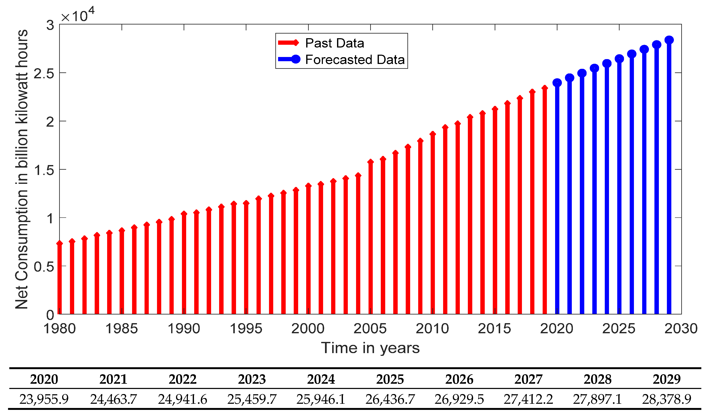

Lets learn something about for which we are honored to make this project!!!
Global electricity consumption 1980-2022
more info on Statica Research Department released on Sep 19,2023
The world's electricity consumption has continuously grown over the past half a century, reaching approximately 25,500 terawatt-hours in2023

electricty consumption per capita
In terms of per capita electricity consumption, China and other BRIC countries are still vastly outpaced by developed economies with smallerpopulation sizes. Iceland, with a population of less than half a million inhabitants, consumes by far the most electricity per person in the world.Norway, Qatar, Canada, and the U.S. also rank among the highest consumption rates. Multiple contributing factors such as the existence of power-intensive industries, household sizes, living situations, appliance and efficiency standards, and access to alternative heating fuels determine theamount of electricity the average person requires in each country.
know more about consumption
Factors affecting
The main purpose of this paper attempted to examine major factors that affect the electricityconsumption of residential consumer type in Cambodia by observing through two approaches, socio-economic and direct-use perspectives. The end-use model and stepwise linear regression analysis wereapplied. The residential consumers were categorized into three levels of household income, such as; high,medium and low. The results of the actual data from survey questionnaire illustrated that determinantfactors of electricity usage depended on the income level. High income households consumed 52% inresidential sector, more than medium and low income households which had 34% and 14%, respectively.
electricity waste recycling in India
We are heartily thankful to our teacher
who has given us this project
Mr.Navdeep Singh